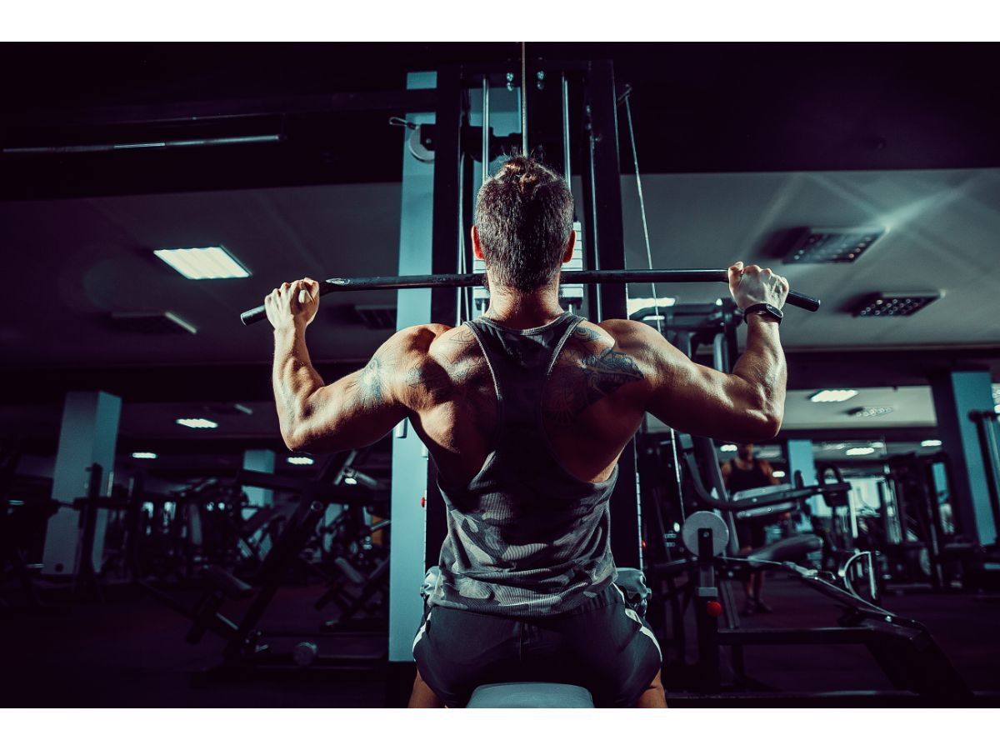

Ik heb een diverse set hobby's die me helpen zowel fysiek als creatief actief te blijven. Eén van mijn favoriete bezigheden is naar de sportschool gaan, waar ik regelmatig mijn lichaam train en aan mijn gezondheid werk. Daarnaast vind ik veel plezier en ontspanning in het maken van muziek, waarbij ik verschillende instrumenten bespeel en soms zelfs eigen nummers componeer.
